Presskit comercial · 2026
Samba do Adilson
O samba de uma família preta da Zona Leste levado a palcos onde ele raramente chega.
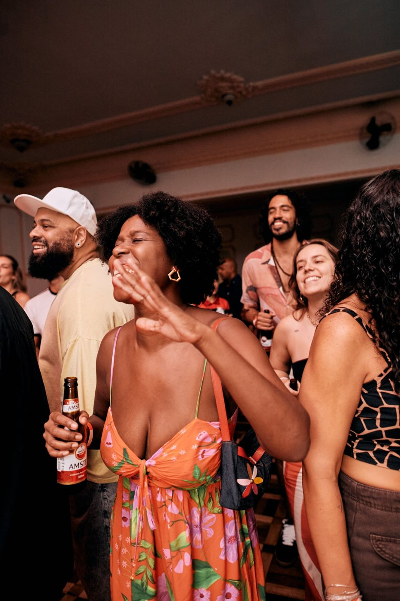
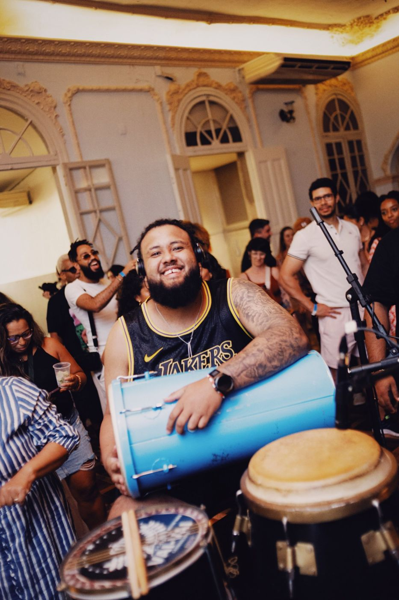
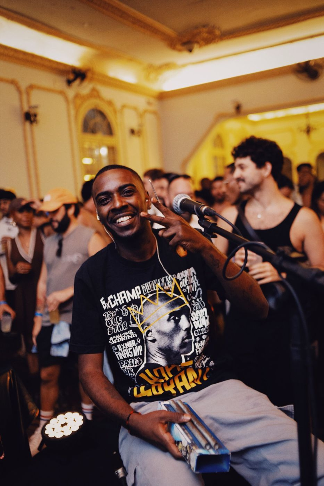
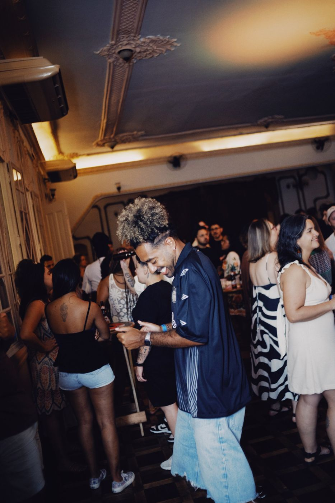
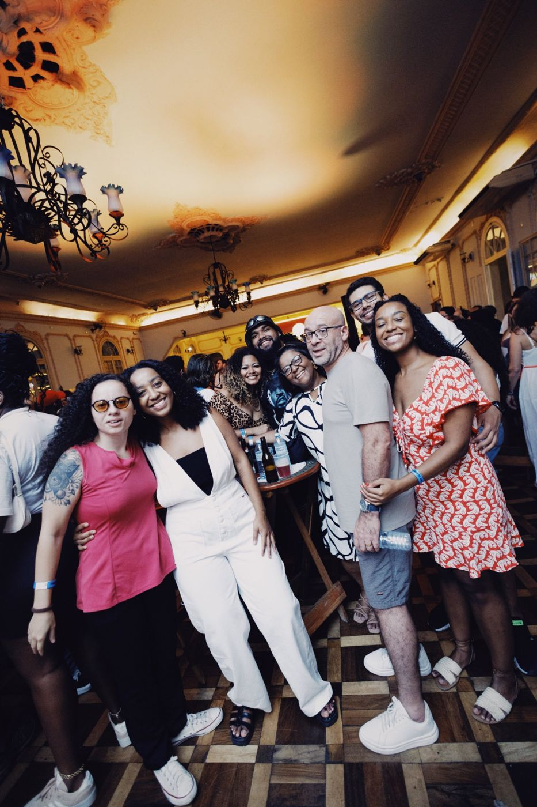
Números de 2025
Uma roda que lota e consome marca
Origem e proposta
O projeto
Uma celebração que nasceu no quintal da família, na Zona Leste de São Paulo, e virou um encontro de comunidade.
O Samba do Adilson nasceu da vontade de reconectar amigos e família em volta do samba, como nos aniversários no quintal da Zona Leste, com a família reunida, roda de samba e churrasco.
Hoje é um evento com curadoria, público fiel e uma marca própria: uma festa que é também uma celebração, feita por uma família preta e aberta para quem chega.
Em quatro anos, o projeto levou essa energia para espaços pouco convencionais para o gênero, de clubes privados a eventos de marcas premium.

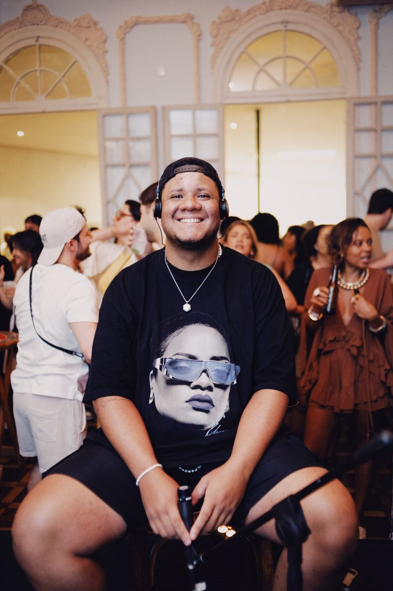
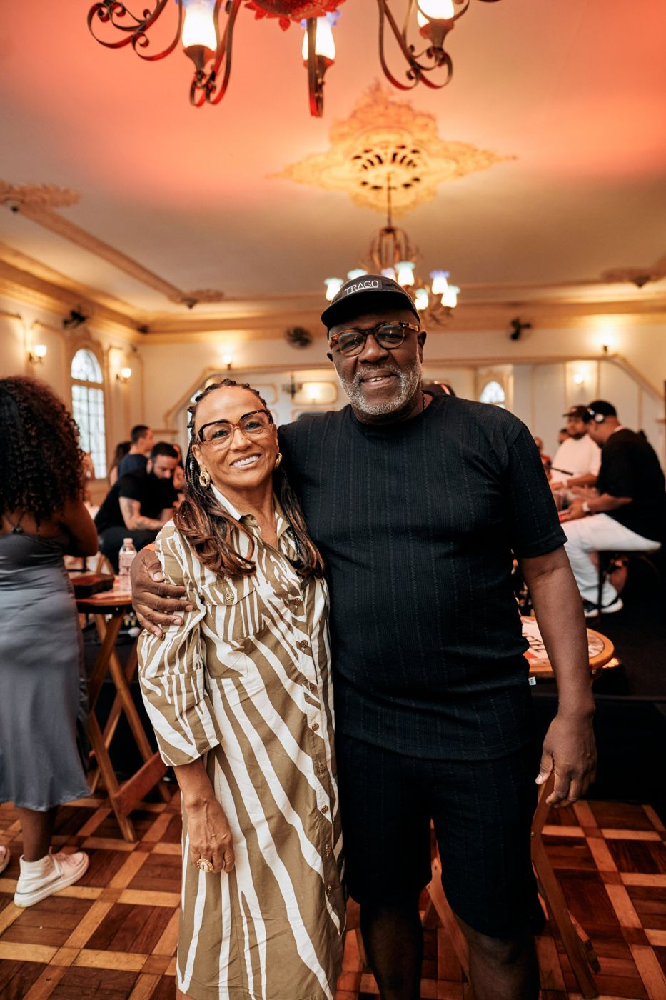
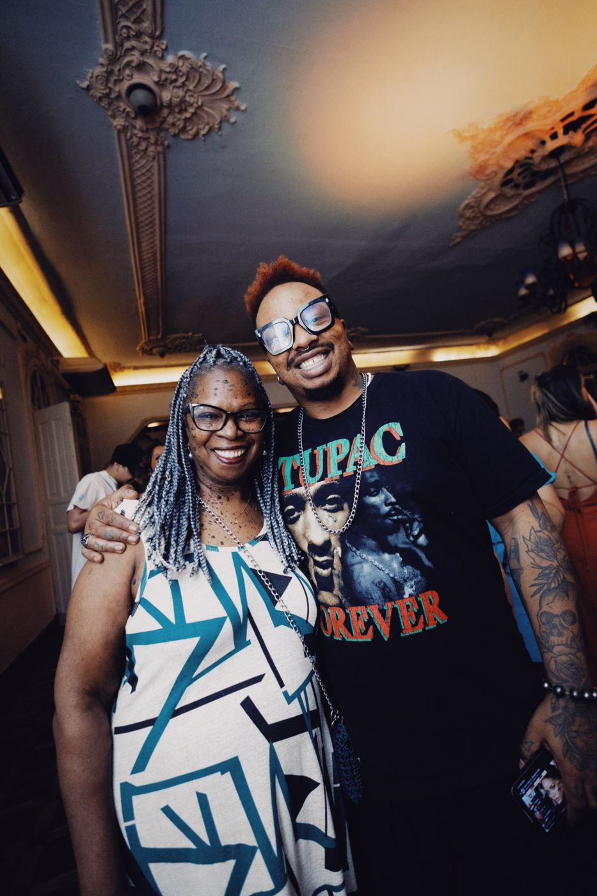
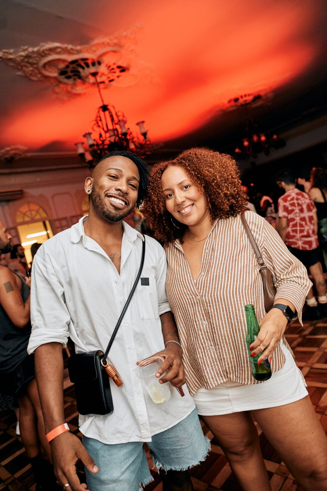
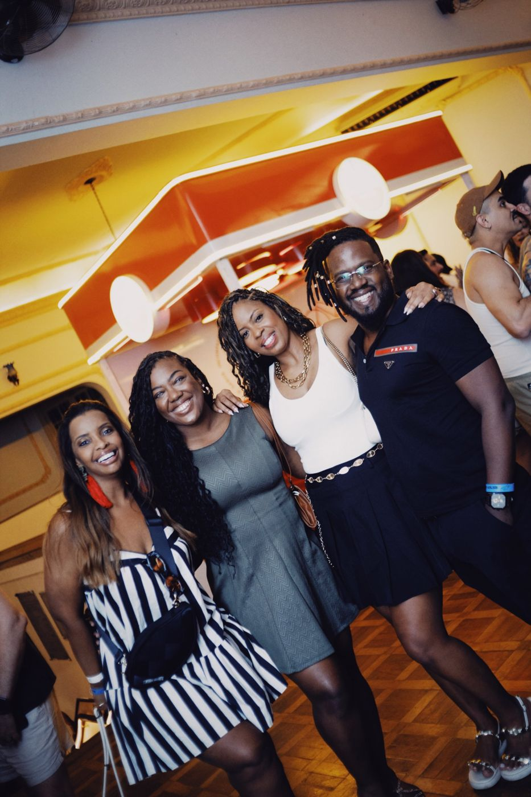
Trajetória
Onde o samba já tocou
- Soho HouseSão Paulo
- ChandonEvento da marca
- Festival DakiFestival
- Amstel DayFestival
- AmstelPatrocínio anual
- Edições proprietáriasSamba do Adilson
 Chandon
Chandon Chandon
ChandonParticipações especiais
- Liniker
- Tássia Reis
- Urias
Calendário
O que vem em 2026
Abertura da temporada.
Encerramento do ano.
Público
Cerca de 1.200 pessoas nas edições proprietárias de 2026.
Comunidade
20 pessoas da comunidade do Samba do Adilson recebem seeding em cada edição:
- Cerveja
- Carta convite
- Brindes
Conteúdo
Cada edição gera fotos profissionais, stories e conteúdo orgânico da comunidade, que fala do evento antes, durante e depois.
Patrocínio
Para marcas
A marca entra na roda: presença no espaço, no copo e no conteúdo de uma comunidade que volta a cada edição.
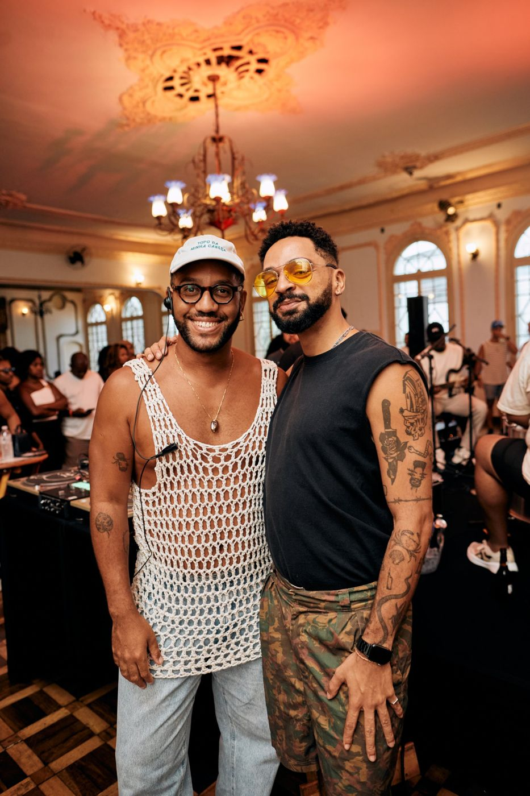
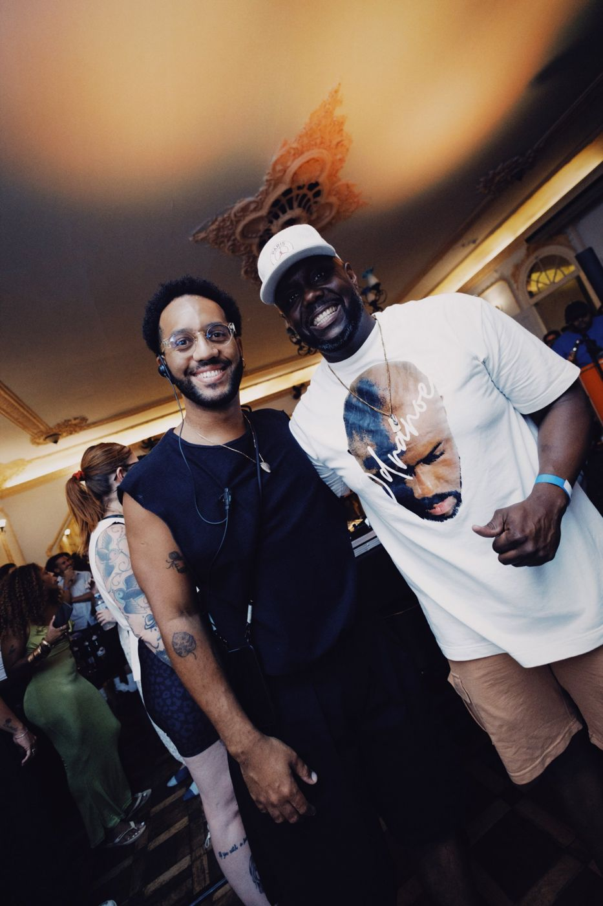

Formato de cota anual, com produto bonificado de acordo com o consumo médio do público. Valores sob consulta.
Idealização e direção · Adilson Trindade Jr.
Vamos fazer a próxima roda juntos
Diretor de Cultura e Relacionamento do Grupo MAP, membro da Forbes BLK e do Comitê Racial da Soho House São Paulo. Há 12 anos conecta marcas à cultura, com passagens por Red Bull, Baer-Mate e o portfólio premium da Ambev.